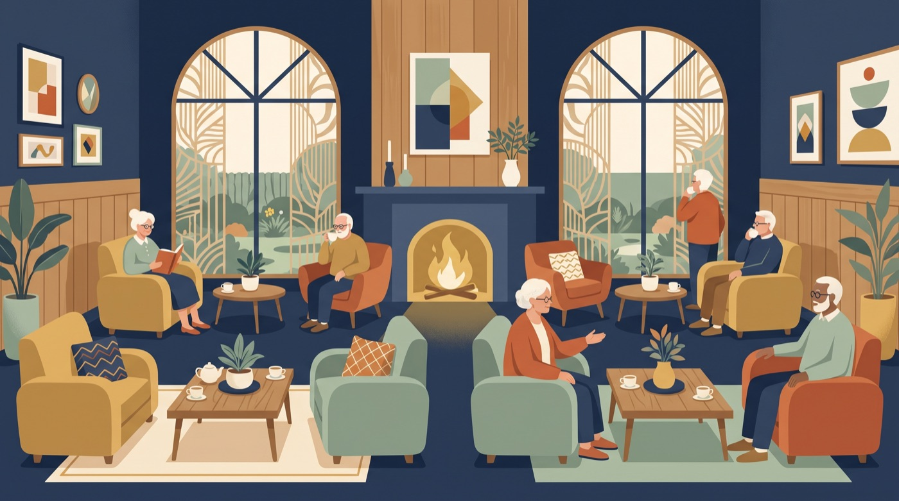

施設入居 ｜ 特養(特別養護老人ホーム)
タムスさくらの杜見沼
タムスグループ(社会福祉法人桐和会)
看護師介護職その他管理者
54分・ドアドア 乗り換え1回
徒歩 3分›堀の内一丁目›バス国際興業バス 大10 12分›大宮駅東口›徒歩 14分›大宮駅東口›バス東武バス 大50 19分›宮ケ谷塔東›徒歩 2分
平日08:00発の目安。乗り換え・待ち時間 約4分を含みます
介護職
| 給与 | 月給：25万7200円～32万200円 (一律手当を含む)
|
|---|---|
| 夜勤・日勤 |
|
| 勤務時間 | シフト制 |
| 休日・休暇 |
|
| 雇用形態 | 正社員・正職員 |
応募資格
- 介護福祉士・実務者研修・初任者研修
待遇・福利厚生
- 長く勤務いただくための各種制度をご用意しています 通勤交通費支給
- 退職金制度 再雇用制度/65歳まで（定年60歳：例外事由1号） 住宅手当（上限3万円） 単身寮 産休育休 社保完備 医療費補助制度 社食あり（1食350円） ハラスメント相談窓口 従業員向けメンタルヘルス窓口 Amazonビジネス割引 制服貸与
- ※各項目規定あり
- 交通費：交通費支給
- ※通勤交通費支給
- ※車、バイク通勤OK（駐車場あり）
そのほか
- [正社員]
- 特別養護老人ホームでの介護職
- 応募要件
- 無資格、未経験可
- 資格経験不問
ほかに 看護師・その他・管理者 の募集もあります。気になる場合は担当まで。
気になったら、担当まで。夜勤の回数や載っていない条件は、こちらで確かめます。
このエリアの暮らし


最寄り駅 七里 徒歩19分バス停 宮ヶ谷塔東 徒歩1分
最寄りは七里駅で徒歩19分ほど。徒歩圏の店は少なめで、買い物はまとめてする暮らし方になります。
コンビニ 1ドラッグストア・薬局 1ほのぼの薬局飲食店 6公園 4東宮下親水公園・神宮台第2公園 ほかクリニック・歯科 2
徒歩10分圏（約800m）の店・施設の数は地図データ（© OpenStreetMap contributors）からの集計です。営業状況は変わることがあります。徒歩は直線距離の1.3倍を80m/分で計算した目安です。
出かけるならこの街へ

大宮44分・乗り換え0回
バス 東武バス 大50 34分（徒歩8分を含む）
埼玉県でいちばん人が集まるターミナル。駅ビルのルミネ・エキュートに、西口のそごう・アルシェ、東口には昔ながらの飲食店街と「南銀」の飲み屋街。新幹線も止まるので、遠出の起点にもなる。週末の買い物も、平日の仕事帰りの一杯も、ここで済む街。
写真：MaedaAkihiko／CC BY-SA 4.0・縮小と切り抜きあり

浦和50分・乗り換え1回
バス 東武バス 大50 34分 › JR湘南新宿ライン 5分（徒歩8分を含む）
伊勢丹とパルコが駅前にある、落ち着いた県庁所在地の街。大宮ほどの喧騒はなく、駅周辺には個人経営の飲食店や老舗が点在する。文教地区として知られ、公園や図書館も近い。静かに過ごしたい休日に向いている。
写真：MaedaAkihiko／CC BY-SA 4.0・縮小と切り抜きあり
繁華街までは平日10時発の目安です。
おすすめする理由
- 希望の「介護職」の求人があります（1件）
- ドアドアで約54分・乗り換え1回（バス利用）
この求人が気になったら担当までご連絡ください。見学の調整や、載っていない条件の確認も、こちらで進めます。